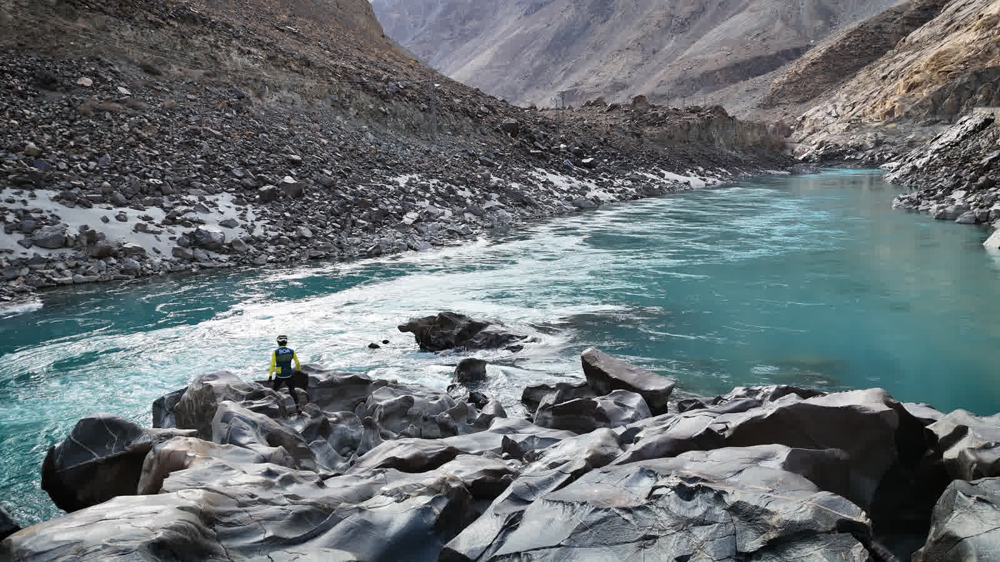
Bike rentals, and soon a mountain cafe, in the heart of Skardu, Baltistan.
Rent a bike — WhatsApp usCycling Markhor began with two friends and one conviction: that the best way to know Baltistan is from the saddle.
Our rental fleet is already rolling out of Skardu — and on a piece of land looking out at the mountains, we're building what comes next: a mountain cafe, traditional brangsas, and a villa. A place to ride from, and a place to return to.
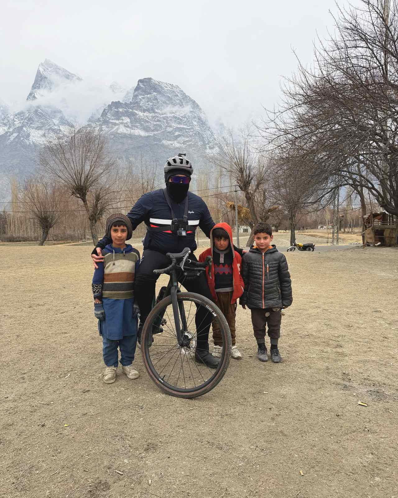
Skardu doesn't have one face. In winter, the Indus turns a turquoise you won't believe until you've seen it. Spring covers the valley in apricot blossom. Summer brings the green; autumn sets it on fire. The grey giants with their snow peaks watch over all of it. Whichever season you arrive in, it will be a different place — and worth riding through.
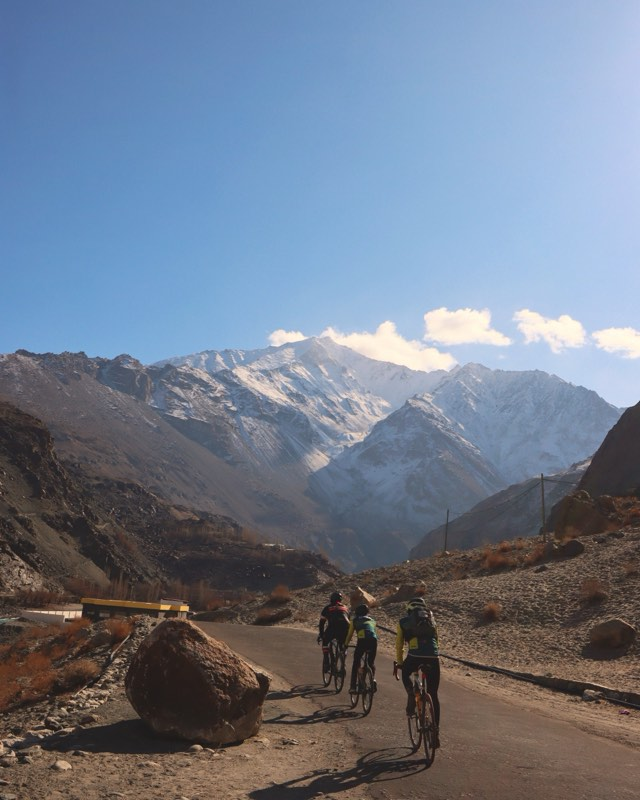
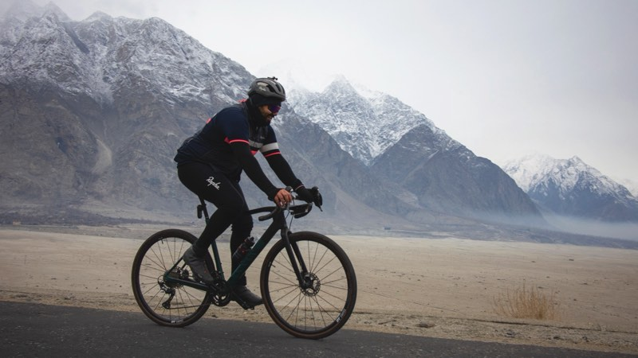
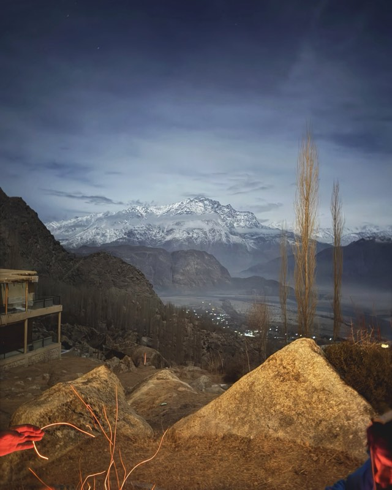
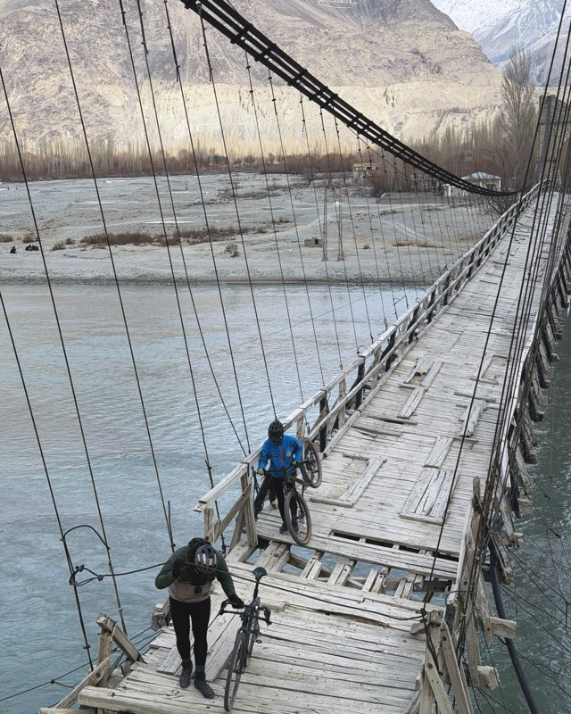
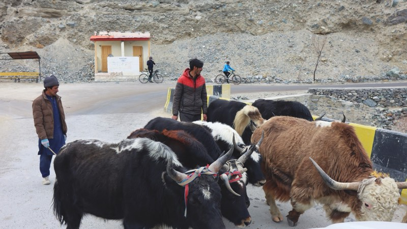
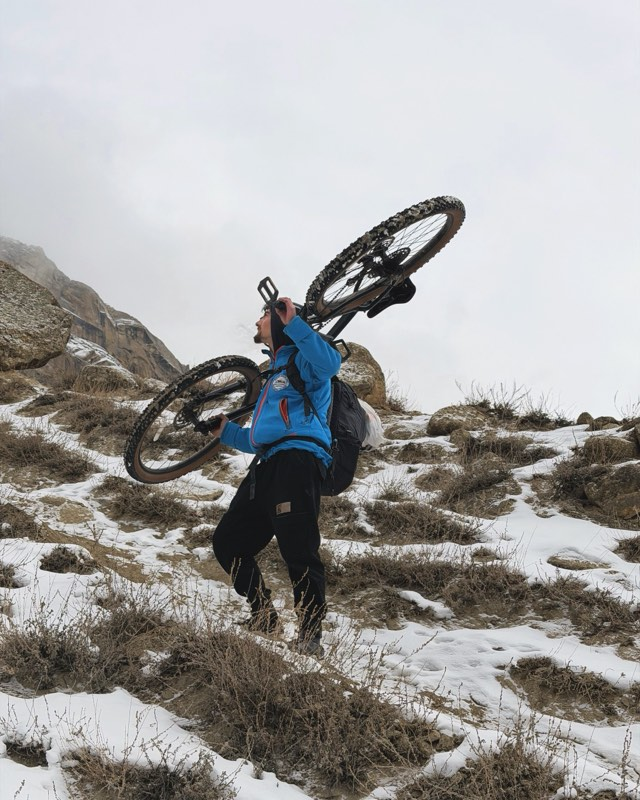
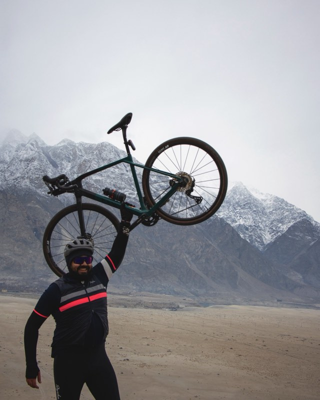
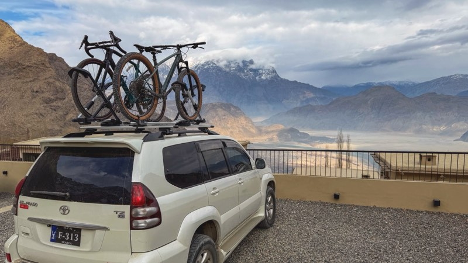
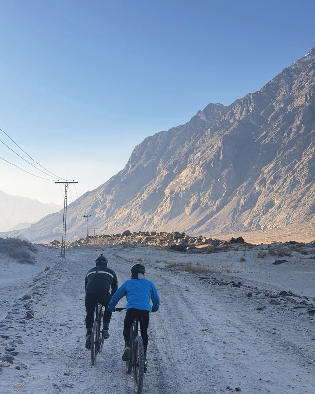